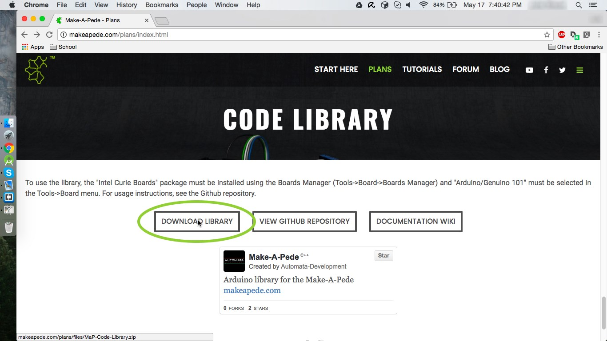
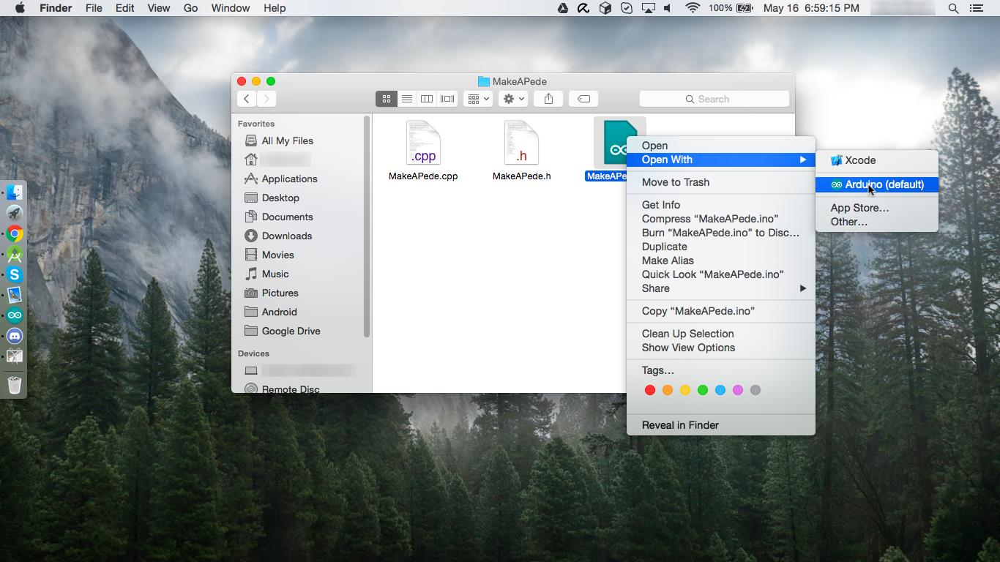
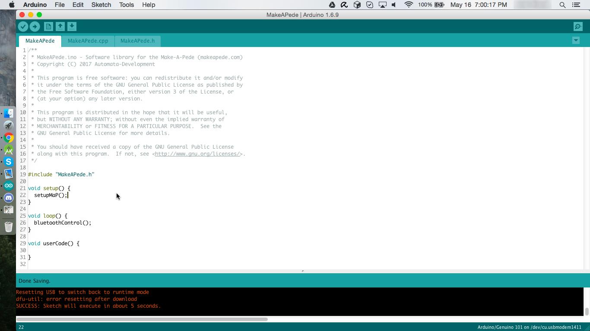
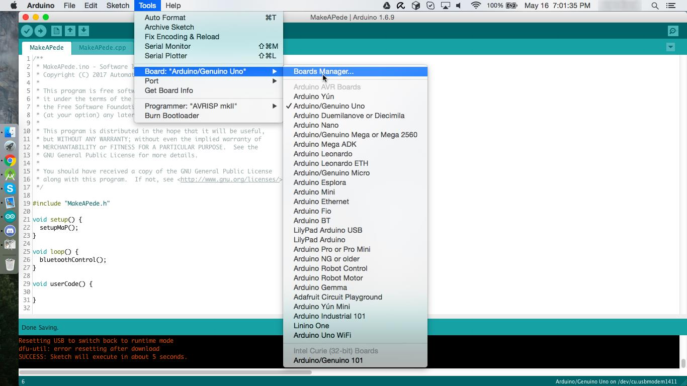
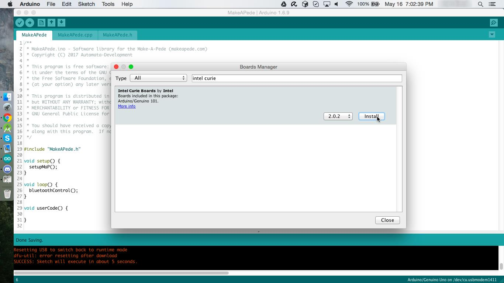
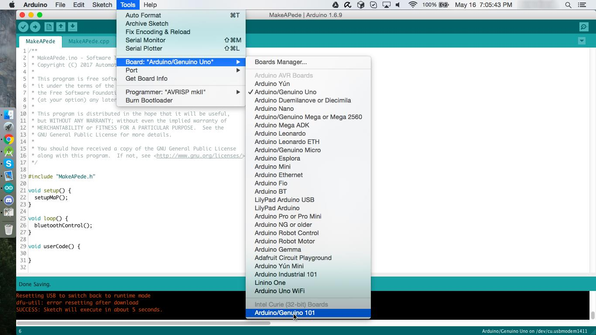
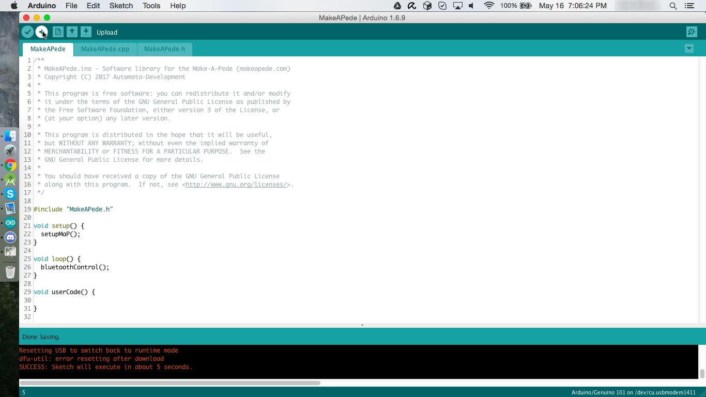

Installing the Make-A-Pede Arduino Library

Download the library .zip file from the Plans page on makeapede.com and extract it.

Open the “MakeAPede” folder and open “MakeAPede.ino” using the Arduino IDE.

The project will open in the Arduino IDE. The main code will be under the “MakeAPede” tab.

Go to the Tools->Board menu and open the Boards Manager.

Search for and install the “Intel Curie Boards” package.

Once the boards package is installed, select “Arduino/Genuino 101” from the Tools->Board menu.

You can now click the upload button in the upper left corner to run the code on your robot.
/